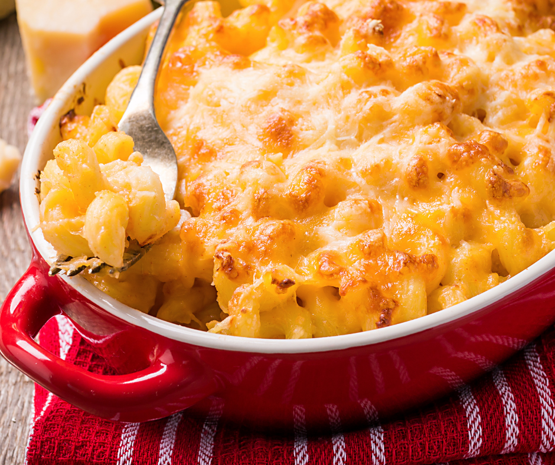

Mama's Mac and Cheese

This right here is an absolute beast of a recipe for any event! Mama's Mac and Cheese is a dish that will have all your friends talking for weeks on end,
practically foaming at the mouth just hearing it brought up in conversation alone. From the crispniess of the bacon bits to the stringy warm cheese this dish will put you back in time
to when you were younger waiting for your mom herself to walk over with that god sent spongebob dish filled to the brim with her homemade mac and cheese!
Ingredients
- 1 3/4 cups elbow macaroni(uncooked)
- 3 tbsp butter or margarine
- 2 tbsp flour
- 2 cups milk
- 2 cups shredded sharp cheddar cheese
- 3 slices Center Cut Bacon(cooked and crumbled)
- Pre heat oven to 350 degrees F(175 degrees C)
- Bring a large pot of lightly salted water to a boil. Cook elbow macaroni in the boiling water, stirring occasionally, until tender yet firm to the bite, about 8 minutes. Drain and keep warm.
- At the same time, melt butter in a large saucepan over low heat. Whisk in flour and stir until mixture becomes paste-like and bubbly, amount 2 minutes. Gradually whisk in milk and bring to a simmer over medium heat. Cook and stir until the micture is thick and smooth, 3 to 5 minutes. Stir in 1 1/2 cups cheese and cook until melted, about 5 minutes.
- Add macaroni and bacon to the saucepan; gently stir to combine with sauce. Transfer to a 1 1/2-quart casserole dish; sprinkle remaining 1/2 cups cheese over top.
- Bake in the preheated oven until hot and bubbly, about 20 minutes.